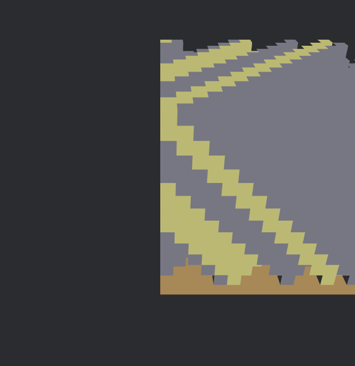
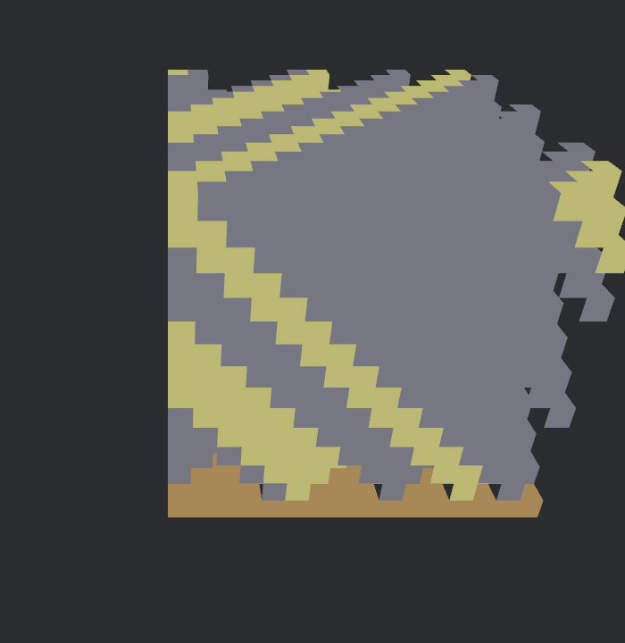

AquaForge
A voxel world prototype in Rust + Bevy. This page captures what's currently playable, what's still scaffolded, and a prioritized list of features to build next.
What's there today
Voxel chunk & meshing
A single 16×16×16 Chunk of blocks (Air,
Dirt, Stone, Sand) is generated with a simple modulo pattern. A
greedy-per-face mesher walks every block, emits a quad for each
exposed face, and tints vertices by block type. The resulting mesh
is rendered as one unlit PbrBundle.
Fly camera & mouse-look
A 3D camera with a WASD+Space/Shift fly controller and a pitch/yaw mouse-look that captures the cursor on left-click and releases it with Esc. Movement is rotation-relative, so "forward" follows where you're looking.
Module layout
- Working
game/chunk.rs·game/mod.rs— chunk data + face-exposed mesher - Working
systems/input.rs— fly camera, mouse capture, Esc to release - Working
main.rs—Appbootstrap, camera spawn, plugin wiring - Stub
game/{player, physics, blocks, world, resources, creatures, crafting, structure, base_building}.rs - Stub
rendering/{lighting, ui, shaders}.rs - Stub
systems/{save_load, networking, audio, events}.rs - Stub
utils/math.rs
Screenshots

(0, 25, 40) looking at the
origin. Dirt floor (brown), sand (yellow) and stone (gray) form a
checker-like pattern from the modulo generator.

Note: materials are currently unlit, so there's no
shading yet — each block type is a flat color. Lighting,
skyboxes, and proper textures are all on the roadmap below.
How to run it
The project uses Rust 2024 edition, so a recent stable toolchain is required. On Linux you'll also need ALSA and udev development headers for Bevy's audio/input backends.
# one-time: system deps for Bevy on Ubuntu/Debian
sudo apt-get install -y pkg-config libasound2-dev libudev-dev
# build & run
rustup update stable
cargo run --releaseRecommended next features
Grouped roughly by priority. P1 unlocks core gameplay and makes the project feel like a game; P2 adds depth and polish; P3 are longer-term stretch goals.
World & rendering
Multi-chunk streaming world
Generalize Chunk into a World that
holds a HashMap<IVec3, Chunk>, streams chunks
in/out around the camera, and remeshes only dirty chunks.
Without this the world is hard-capped at 16³ blocks.
Procedural terrain (noise-based)
Replace the (x+y+z) % n placeholder with layered
Perlin/Simplex noise (e.g. the noise crate):
heightmap for terrain surface, a second octave for caves, and a
biome selector for block types.
Lighting & a sky
Turn off unlit: true, add a directional sun, a
SkyboxBundle/gradient sky, and cheap per-voxel
ambient occlusion baked into vertex colors. Even flat shading
dramatically improves readability.
Block textures & a texture atlas
Swap vertex colors for a single texture atlas (one image, UV offsets per block face). This is the prerequisite for varied materials, animated water, and foliage.
Greedy meshing
The current mesher emits one quad per exposed face. A greedy pass merges coplanar same-type faces into larger rectangles, cutting triangle counts 5–10× on typical terrain.
Gameplay
Player controller with collision
Replace the fly camera with a capsule player that has gravity, jumping, and swept AABB-vs-voxel collision. This is the first step toward an actual game loop.
Raycast block break / place
Cast a ray from the camera each frame, highlight the targeted block, and let left/right mouse remove or place blocks. Remesh only the affected chunk(s).
Inventory & hotbar HUD
A simple bevy_ui hotbar with selected-slot
highlight, item counts, and keyboard 1–9
selection. Feeds naturally into crafting later.
Aquatic theme: water, buoyancy, fluids
The project's name begs for it. Add a Water block
with a translucent material, a slow flood-fill propagation
system, and buoyancy on the player. Good excuse to build a
cellular-automata fluid module.
Crafting & base building
Flesh out the existing crafting.rs and
base_building.rs stubs: recipes defined in RON,
workbench block that opens a crafting UI, and a "forge" as the
namesake centerpiece that converts raw resources into tools.
Creatures & AI
Start with passive fish that wander through water blocks using
big-brain or simple state machines, then add a
hostile critter with line-of-sight. Low bar, high feel.
Systems & infrastructure
Save / load
Persist the world to disk with bevy_asset + RON
(or bincode for speed). Serialize only non-default
blocks per chunk and compress with zstd.
Audio pass
Footsteps keyed off the block the player is standing on, ambient underwater loop, block-break/place SFX. Bevy's built-in audio is sufficient to start.
Multiplayer scaffolding
Add an authoritative server using bevy_renet or
lightyear. Replicate player positions and block
edits first; world generation stays client-side but seeded.
README, controls, and CI polish
The repo currently has no README.md. A short one
with a controls cheatsheet, a screenshot, and build instructions
would massively lower the bar for new contributors. CI can also
add cargo clippy --deny warnings and
cargo fmt --check.
Quick code-health cleanup
Three pub struct GamePlugin; types share the same
name across game/, systems/, and
rendering/. Rename them (e.g.
SystemsPlugin, RenderingPlugin) so
they can coexist when the stubs start registering systems. Also
drop the unused i counter in
spawn_chunk_mesh.